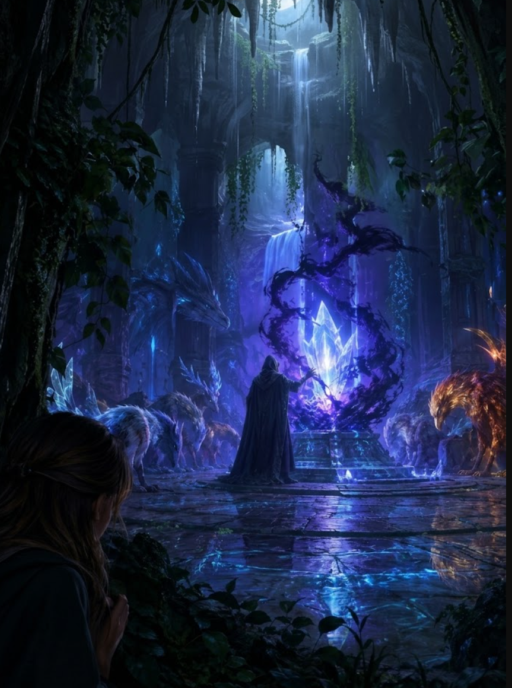

2/3
Camino actual: El Secreto de Varnok
🔊 Narración:
Ayla llega a una enorme cámara donde las criaturas intentan desesperadamente proteger un gran cristal que pierde su luz: el Corazón de Aether.
Un encapuchado usa magia oscura para absorber su poder. El villano se da cuenta de la presencia de Ayla y levanta su mano llena de sombras.
♦ ───── ♦